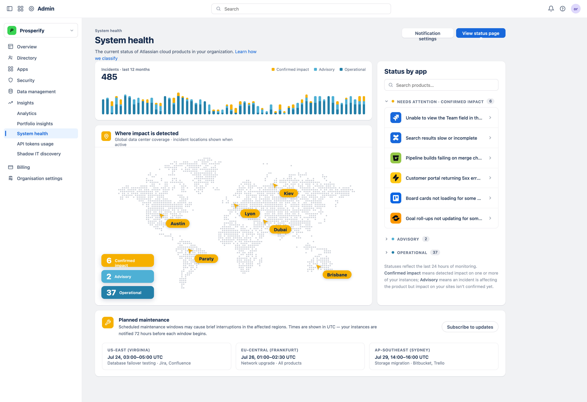
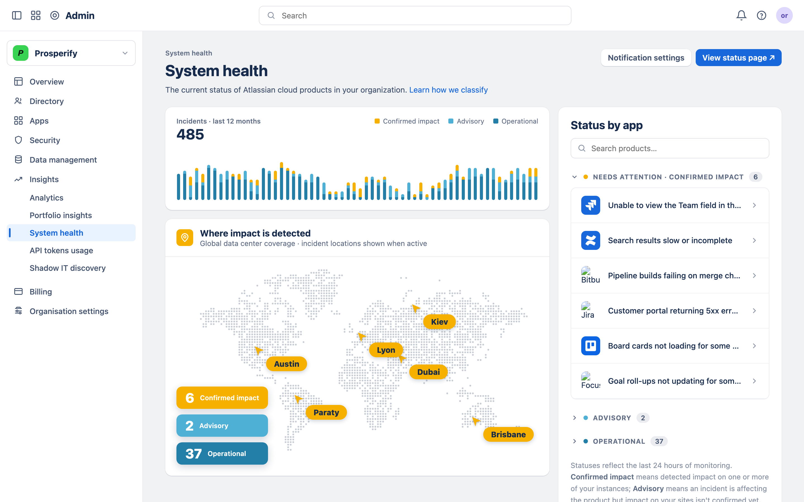

Atlassian · Design Lead
How we gave teams a single, real-time view of system health — turning scattered signals into clear status, early warnings, and faster incident response.

Context
System Health brings monitoring, alerting, and incident context into one place — giving teams a live picture of how their systems are performing. Instead of piecing together signals from disconnected dashboards, teams can see what's healthy, what's degrading, and what needs attention, and act before small issues become outages.

Teams were watching their systems through a patchwork of disconnected dashboards, logs, and alerts. Critical signals were easy to miss, context lived in different tools, and by the time an issue surfaced it had often already reached customers.
By unifying health signals into one clear, real-time surface — with alerting that prioritizes what matters and context that travels with every incident — we gave teams the confidence to catch problems early and resolve them faster, together.
Reliability isn't about more dashboards —
it's knowing what to look at first
— [Add name, role, team]
Real-Time Monitoring
Live status across services turns a wall of raw metrics into a clear, scannable picture — so teams can immediately see what's healthy, what's trending the wrong way, and where to focus.
Smart Alerting
Alerting prioritizes what actually matters and groups related signals together, so teams are notified about real problems early — without the fatigue of constant false alarms.
Incident Context
When something breaks, the timeline, affected systems, and recent changes are already gathered in one place — so teams can move from detection to resolution without hunting for information.
Proactive Reliability
With health trends and early signals in view, teams can shift from reacting to outages toward preventing them — spotting the slow degradations and recurring patterns that lead to incidents, and acting before they escalate.